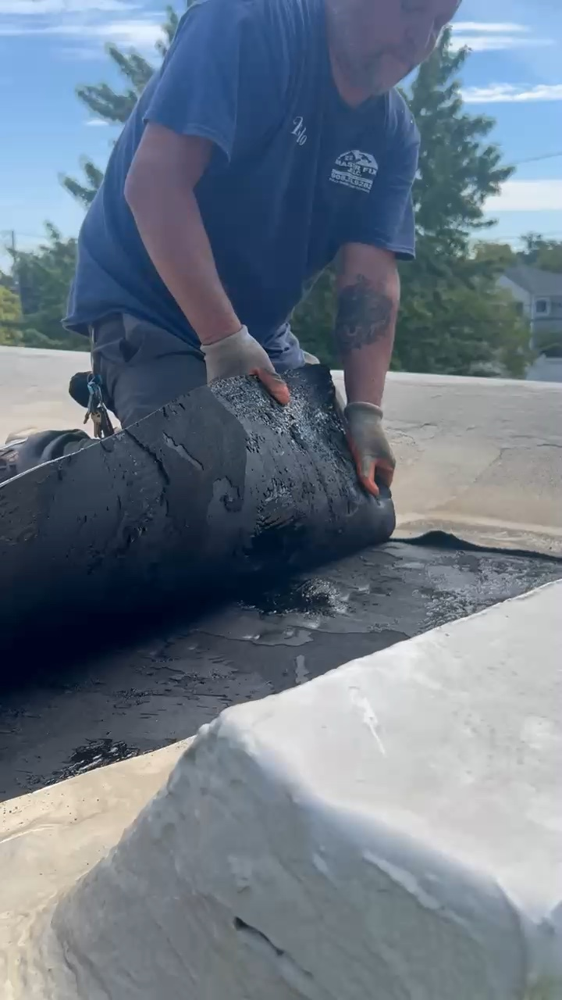

Staten Island · Flat roof overlay
Flat Roof Overlay on Leverett Avenue, Staten Island
A silicone-coated flat roof needed a new roofing layer. Read about our torch-down overlay project on the South Shore and watch the job-site video.
Read the Leverett Avenue story and watch the video →